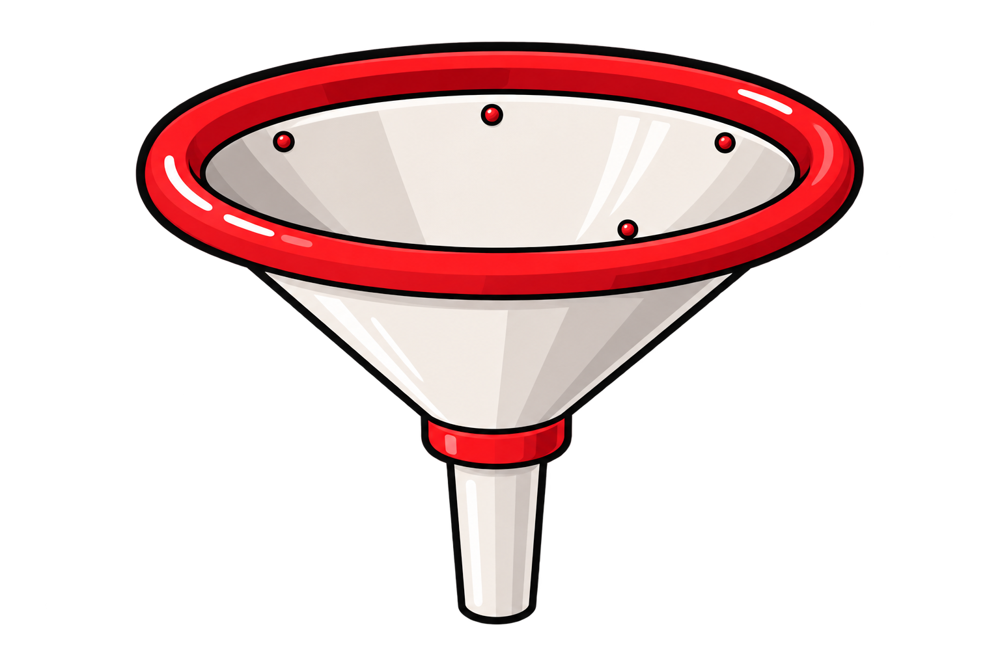

A PUBLIC SERVICE ANNOUNCEMENT FROM THE PEOPLE'S DAIRY BOARD
SHIVEN
KA DUDU
NIKALO
One citizen. One carton. One nation
waiting for the milk to flow.
100%PURE
SHIVEN
✦
OUR MOTTO IS
TO PROVIDE
BEST MILK
TO PROVIDE
BEST MILK
GRADE
A++
A++
KEEP
UPRIGHTदूध
UPRIGHTदूध
DOCUMENT CONTROL / FIELD GUIDE
THE
CAMPAIGN
INDEX
01THE RELEASE
PROCEDURE IN PROGRESS
TIP THE
CARTON.
Gravity has been consulted. The nation is ready. Scroll with purpose and observe the sanctioned release of Shiven's finest.
SHIVEN
OUR MOTTO IS
TO PROVIDE
BEST MILK
TO PROVIDE
BEST MILK

MILK
WAY→
WAY→
02THE MESSAGE
NATIONAL DAIRY DIRECTIVE
LET THE
MESSAGE
FLOW.
01 / ORDERTHE MILK
MUST FLOW.Issued by the Central Committee of Cream
MUST FLOW.Issued by the Central Committee of Cream
02 / DUTYEVERY
GLASS COUNTS.Consumption is a civic virtue
GLASS COUNTS.Consumption is a civic virtue
03 / GROWTHDRINK SHIVEN.
SAVE THE ECONOMY.Annual report: looking extremely liquid
SAVE THE ECONOMY.Annual report: looking extremely liquid
03THE DESTINATION
THE FINAL STAGE OF GREATNESS
FROM
RIVER
TO GLASS.
All national milk infrastructure has led to this moment.

98% OF SCIENTISTS
BELIEVE SHIVEN
IS HIGHLY
MILKABLE
BELIEVE SHIVEN
IS HIGHLY
MILKABLE
APPROVED
FOR
SOCIETY
FOR
SOCIETY
THE OFFICIAL FINDING
THE GLASS
IS FULL.
A measurable triumph of dedication, gravity and one very cooperative carton.
98%OF SCIENTISTS
AGREE
AGREE
SHIVEN IS
EXTREMELY
MILKABLE
*This is a fictional joke statistic. No scientists were consulted.
SK
2026
2026
THE PEOPLE'S NEXT STEP
JOIN THE
SHIVEN MILK
INITIATIVE
Put your name where your glass is. Enlist in the most ambitious dairy movement this side of the breakfast table.
Fictional initiative / responses routed through the official dairy channel.